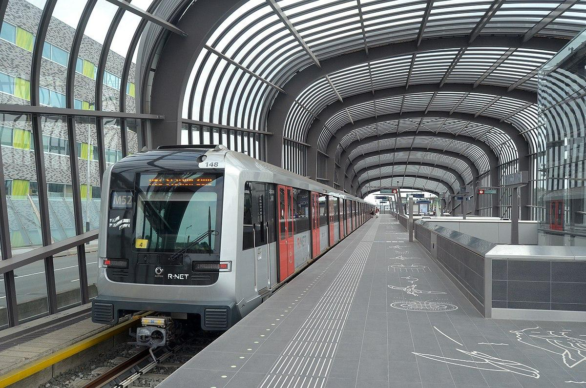

Amsterdam Public Transport Guide
Travel Tips & Resources for Getting to Amsterdam City Center

1. Amsterdam Travel Ticket: Best for Easy Airport Transfers
- Best For: Visitors arriving at Schiphol Airport who want a ticket that covers both airport transfers and unlimited city travel.
- Cost: Starts at €17 for 1 day, €22.50 for 2 days, and €28 for 3 days.
- Pro Tip: Ideal for travelers looking for easy airport-city transfers and unlimited public transport within the city.
- Where to Buy: Schiphol Airport ticket machines, NS service counters, and online.
2. Single Trip Tickets: For Occasional Travelers
- Best For: Visitors making a few trips around the city.
- Cost: €3.40 for 1 hour.
- Where to Buy: GVB machines, onboard, or via the GVB app.
3. Day & Multi-Day Passes: For Frequent Travelers
- Best For: Visitors planning to explore the city extensively over multiple days.
- Cost: €8.50 for 1 day, up to €37 for 7 days.
- Where to Buy: GVB machines, app, or visitor centers.
4. Tap & Go: Use Your Contactless Bank Card
- Best For: Quick and hassle-free travel without buying a ticket in advance.
- How it Works: Simply tap your bank card on the reader to enter and exit public transportation.
- Tip: Perfect for short visits and for those who want to avoid managing paper tickets or transport cards.
Additional Tips
- Use Transit Apps: Download the GVB or 9292 app for live schedules, route planning, and ticket purchasing.
- Avoid Peak Hours: Travel outside rush hours (before 7 AM or after 10 AM) for a smoother experience.
- Visitor Centers: For personalized advice, visit transport hubs like Amsterdam Central Station to select the best ticket for your needs.
Choosing the Right Ticket
- Short Stay: Tap & Go with your bank card or a single ticket for occasional trips.
- Longer Stay: Opt for a multi-day pass for extended travel.
- From Schiphol Airport: The Amsterdam Travel Ticket is the most convenient option for easy airport transfers and unlimited travel in the city.